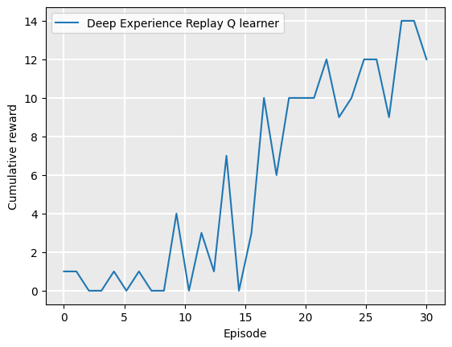

Getting started with a first example#
Learning outcomes
The learning outcomes of this chapter are:
Gain a basic understanding of reinforcement learning.
Have practical experience in building a reinforcement learning agent using deep Q learning.
Be excited about reinforcement learning and its possibilities.
Overview#
Before we start on the basics of reinforcement learning, let’s build an example of a reinforcement learning agent. We will use reinforcement learning to play Atari games. Atari was a game consoles manufacturer in the 1990s – their logo is shown in Fig. 1.
The Arcade Learning Environment, built on the Atari 2600 emulator Stella, is a framework for reinforcement learning that allows people to experiment with dozens of Atari games. It is built on the popular Gymnasium framework from OpenAI.
Example: Playing Freeway#
Freeway is the Atari 2600 game that we will begin with. In Freeway, a chicken needs to cross several lanes on a freeway without being run over by a car. A screenshot of the game is shown in Fig. 2. Each time the chicken crosses to the top, we gain one point. If the chicken is struck by a vehicle, it goes back a few spaces, slowing it down. The aim is to cross the road as many times as possible in the allocated time.
This is a simple game as far as video games go; and as far as reinforcement learning goes. However, let’s train a reinforcement learning agent to play it.
Import components from the reinforcement learning framework#
First, we need to import some stuff for the deep learning package, and get some settings:
import torch
# if GPU is to be used
device = torch.device('cuda' if torch.cuda.is_available() else 'cpu')
torch.set_default_device(device)
The first line above simply imports torch, which is the Python package for the PyTorch deep learning framework. This is not a framework specifically for reinforcement learning — it is a general deep learning framework for production code, which we use as part of our reinforcement learning solution. The rest set up the device to use. If our machine has a GPU (graphics processing unit), then using cuda will use that GPU for doing matrix calculations in our deep learning model. If our machine does NOT have a GPU, we use the CPU instead. A GPU will allow us to train more quickly, but otherwise, we get the same results.
Next, we import a few other things that are part of the reinforcement learning framework written for this book:
from mastering_rl.learners.experience_replay_learner import ExperienceReplayLearner
from mastering_rl.qfunctions.deep_q_function import DeepQFunction
from mastering_rl.multi_armed_bandit.epsilon_decreasing import EpsilonDecreasing
from mastering_rl.markov_decision_processes.ale_wrapper import ALEWrapper
ExperienceReplayLearner is the reinforcement learning algorithm that we will be using for this example. It uses a DeepQFunction to learn the value of different actions in the game, depending on the context of the game. It is a variant of deep Q learning. Effectively, the way that ExperienceReplayLearner works is that it plays the game a number of times, then samples some of the moves from those games, and works out how good each move was, based on the score of the game that move was played in. It then uses machine learning to learn a predictor (DeepQFunction in this example) for how good other moves are in other contexts. Using the machine learning predictor, the experience replay learner plays the game a bunch of times again — hopefully better this time because it knows something about the game. Then, it again samples moves and updates its machine learning predictor. It repeats this process until it has played a certain number of games. We will use 30 games for this example.
The term “experience replay” comes from the fact that the agent first plays the games, and then “replays” them back again to learn. You can learn more about this in Experience Replay.
EpsilonDecreasing is a multi-armed bandit algorithm. These are important in reinforcement learning. For now, just know that what this does is help us explore different moves of the game, so that the player ‘experiments’ to help it learn.
Finally ALEWrapper is a simple wrapper class for the Arcade Learning Environment that we use to play Freeway.
Set up the learning environment#
Next, we setup the Arcade Learning Environment:
version = "Freeway-ramDeterministic-v4"
policy_name = "../policies/Freeway.policy"
mdp = ALEWrapper(version)
The version is the game that we are going to play – in this case, Freeway version 4, which uses the RAM to represent the problem. We could also learn directly from pixels, but for now, we keep it simple. policy_name is where we are going to store a policy for our agent, so we can use it later. A policy just tells the player which moves to make at each step of the game.
Finally, we create our environment, which is called mdp because it is a Markov Decision Process (MDP), which is the model that describes reinforcement learning problems. More on that later!
Set up the learner#
Now, we are ready to set up our learning algorithm. The following five lines are all it takes:
action_space = len(mdp.get_actions())
state_space = len(mdp.get_initial_state())
policy_qfunction = DeepQFunction(state_space, action_space)
target_qfunction = DeepQFunction(state_space, action_space)
learner = ExperienceReplayLearner(mdp, EpsilonDecreasing(), policy_qfunction, target_qfunction)
We create two DeepQFunction instances. The reasons for this are described in Experience Replay, but for now, what is important is that we have one called policy_qfunction, which is the machine learning model that will be choosing moves during learning, and will also form the basis of our policy when we have finished learning and create a player to just play the game. The target_qfunction helps the learning, but is then not used again.
We create the ExperienceReplayLearner by passing it the environment that it will learn from, mdp, a multi-armed bandit algorithm EpsilonDecreasing, and the two deep Q functions.
policy_qfunction will end up being the basis for our policy after we have finished learning. For now, it is just a deep learning model with random parameters, so it does not do anything useful. We can use this to construct a policy for our agent player to use:
from mastering_rl.policies.q_policy import QPolicy
policy = QPolicy(policy_qfunction)
We save the policy to a file so we can use it later without having to re-train the agent.
Let’s watch it play Freeway by creating a GIF of it playing:

Freeway is simulated via the Arcade Learning Environment, licensed under a General Public Licence 2.0, through the Stella emulator. Farama-Foundation/Gymnasium is licensed under the MIT License.
As we can see, it does not do so well, because we have not yet tried to learn any behaviour.
But, we are ready to start learning!
Training the agent with reinforcement learning#
Next, we need to do the hard work – training the agent! This should be difficult to code, right? This is where the learning actually happens. Well, not so difficult to code once we have a good framework in place:
rewards = learner.execute(episodes=30)
The execute function is what runs the games, collects the experience, rates the quality of moves, and puts the right data into the deep Q functions. We need to specify how many episodes (games) it should play. In this case, we choose 30. It returns a list of rewards (in this case: points in the game) received at each step.
Now, we can construct a new policy for our agent player to use. This is easy enough too. Remember that policy_qfunction? That has learnt a Q function, which simply tells us, at each step of the game, the estimated ‘value’ of each of the possible moves. Here, value is just saying: at this step, I think action ‘Up’ will, on average, give us a total future score of 10.
We can now just put that inside a policy class, and we save the policy for future use:
policy = QPolicy(policy_qfunction)
policy_qfunction.save(policy_name)
QPolicy provides a function called select_action(state, actions), where state is the current step of the game and actions are the set of applicable actions. All select_action does is iterate over all actions in actions and return the one with the highest estimate.
That’s it! We now have a trained player that can play Freeway.
Let’s have a look at how it goes:
policy_qfunction = DeepQFunction.load(policy_name)
policy = QPolicy(policy_qfunction)
mdp.create_gif(policy, "../assets/gifs/freeway_trained_deep_q_function")

Much better!
We can also study how well the algorithm was learning during the learning process. The following graph plots the number of rewards (number of times the chicken makes it to the other side of the road in this case) received, against the number of games that it has played:
from mastering_rl.tests.plot import Plot
label = "Deep Experience Replay Q learner"
Plot.plot_cumulative_rewards([label], [rewards], smoothing_factor=0.9)

Example: Playing Frogger#
Let’s build another one, but this time, to play the game Frogger. This is a very similar game. Instead of a chicken, there is a frog. The frog has to get to the other side of a road and river. If the frog is struck by a vehicle, it loses a life and starts back at the beginning. Once it gets to the river at the top, it needs to jump on the logs and other floating debris to get to the other side of the river. If it falls into the water, it loses a life and starts back at the beginning. It has three lives in total.
The first thing we do is create an MDP for the Frogger game:
version = "ALE/Frogger-ram-v5"
policy_name = "../policies/Frogger.policy"
mdp = ALEWrapper(version)
Everything else is just the same as before: we create the DeepQFunction instances and the learner, and then execute it:
action_space = len(mdp.get_actions())
state_space = len(mdp.get_initial_state())
policy_qfunction = DeepQFunction(state_space, action_space)
target_qfunction = DeepQFunction(state_space, action_space)
learner = ExperienceReplayLearner(mdp, EpsilonDecreasing(), policy_qfunction, target_qfunction)
policy = QPolicy(policy_qfunction)
As with Freeway, let’s watch a policy that has randomly initialised parameters first:
mdp.create_gif(policy, "../assets/gifs/frogger_initial_deep_q_function")

Frogger is simulated via the Arcade Learning Environment, licensed under a General Public Licence 2.0, through the Stella emulator. Farama-Foundation/Gymnasium is licensed under the MIT License.
We can see that it does quite poorly. But let’s train this for 30 episodes:
rewards = learner.execute(episodes=30)
policy = QPolicy(policy_qfunction)
policy_qfunction.save(policy_name)
Let’s look at how it goes:
policy_qfunction = DeepQFunction.load(policy_name, state_space, action_space)
policy = QPolicy(policy_qfunction)
mdp.create_gif(policy, "../assets/gifs/frogger_trained_deep_q_function")

Hmmm… not much better. What is happening? Why does it not work for Frogger, but it works for Freeway?
The answer is simple: Freeway has just three moves: Up, Down, or Stay. Frogger has five: Up, Down, Left, Right, or Stay. As such, running for only 30 episodes does not give the learner enough samples to learn good behaviour.
What if we train it for more episodes?
Here is one that I prepared earlier, which is trained for 2000 episodes (and ran overnight for several hours):
policy_name = "../policies/frogger_2000_episodes.policy"
policy_qfunction = DeepQFunction.load(policy_name, state_space, action_space)
policy = QPolicy(policy_qfunction)
mdp.create_gif(policy, "../assets/gifs/frogger_trained_2000_deep_q_function")

This is much better! It still does not reach the other side, which would (presumably) require another few thousands episodes — or a better learning algorithm!
Discussion#
We looked at training a couple of simple player agents to play two Atari games. These worked OK.
Depending on the properties of the application, some types of reinforcement learning algorithms work better than others.
How do the algorithms learn what they do? Which learning algorithms are best for which type of application?
In the rest of these notes, we will learn more about this.
Takeaways#
Takeaways
Pulling together an agent that can learn is not difficult when we use an existing framework.
But the more complex the application, the more computational time it takes to train them.